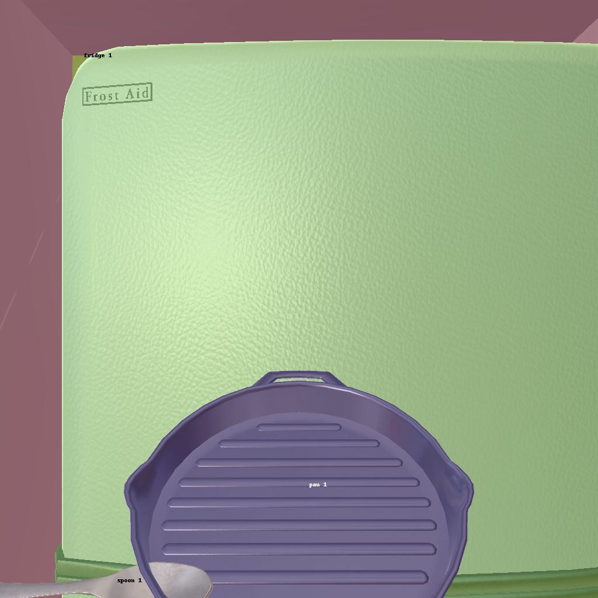
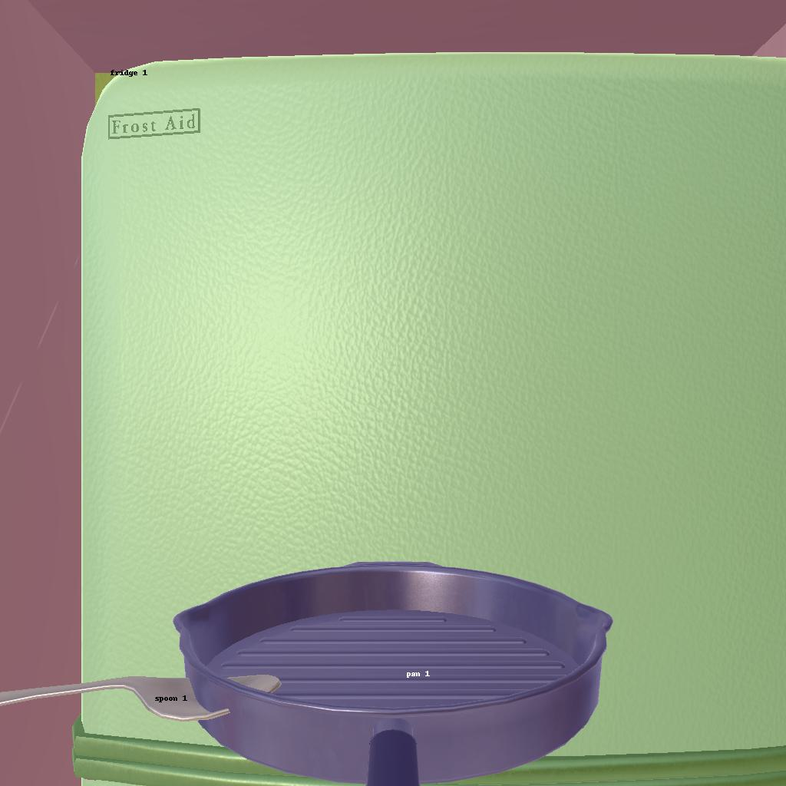

---------------------------------------------------------task: 16---------------------------------------------------------
--------------------------------------------------------------------------------------------------------------------------------------------------------------------
--------------------------------------------------------------------------------------------------------------------------------------------------------------------
Step:--------------------------------------------------------------------------12-------------------------------------------------------------------------------
----------------------------------------
VLM Prompt:
Image1:
Image2:
**Instruction**
1. Analyze the provided image to identify all visible household objects, focusing on those relevant to the task description "put a cool pan in sinkbasin."
2. Use the analysis of the image and the task hint "The agent must find an object of the desired type, pick it up, go to a fridge, cool the object with the fridge, then find the correct location to place it, and put it down there. The agent does not need to use the fridge button or open the fridge to cool the object, and the agent just needs to do action that is "cool the object with the fridge"." to answer the question: what is the most reasonable action in the choices for the task description "put a cool pan in sinkbasin"?
4. Decide and write the answer using the template: The answer is: (i): , where i is the real number. If there is no desired object in the image, search every place based on **Initial Observation** to find the object. And if no one is exactly correct, choose a similar answer.
**Initial Observation**
You are in the middle of a room. Looking quickly around you, you can see cabinet (1-9), countertop (1-3), drawer (1-9), stoveburner (1-4), microwave (1), sink (1), fridge (1), toaster (1), coffeemachine (1), sinkbasin (1), shelf (1-3), garbagecan (1)
**Answer Choices**
(1): go to cabinet 1
(2): go to countertop 1
(3): go to cabinet 2
(4): go to countertop 2
(5): go to drawer 1
(6): go to drawer 2
(7): go to drawer 3
(8): go to drawer 4
(9): go to stoveburner 1
(10): go to drawer 5
(11): go to stoveburner 2
(12): go to stoveburner 3
(13): go to stoveburner 4
(14): go to cabinet 3
(15): go to cabinet 4
(16): go to microwave 1
(17): go to cabinet 5
(18): go to cabinet 6
(19): go to cabinet 7
(20): go to sink 1
(21): go to toaster 1
(22): go to coffeemachine 1
(23): go to cabinet 8
(24): go to drawer 6
(25): go to drawer 7
(26): go to drawer 8
(27): go to sinkbasin 1
(28): go to shelf 1
(29): go to shelf 2
(30): go to countertop 3
(31): go to shelf 3
(32): go to drawer 9
(33): go to cabinet 9
(34): go to garbagecan 1
(35): open fridge 1
(36): close fridge 1
(37): put pan 1 in/on fridge 1
(38): examine pan 1
(39): examine fridge 1
**Answer**
Let's think step by step by following the instructions.
----------------------------------------
----------------------------------------
Original Response:
The task requires the agent to find a pan, cool it with the fridge, and then put it in the sinkbasin. From the initial observation, we know there's a fridge and a sinkbasin in the room.
In Image 1 and Image 2, we can see a pan labeled as "pan 1" and a spoon labeled as "spoon 1." According to the task hint, the agent does not need to use the fridge button or open the fridge to cool the object. So, the agent just needs to perform an action that is "cool the object with the fridge."
Since the pan is already visible in the images and assuming it is not already cool, the next reasonable action would be to cool the pan with the fridge. However, the provided answer choices do not include an action that directly states "cool pan 1 with fridge 1." The closest action to what is described in the task hint is to put pan 1 in/on fridge 1, which is option (37).
Therefore, the most reasonable action to choose for the task description "put a cool pan in sinkbasin" is to first cool the pan with the fridge, and the action that represents this step is (37): put pan 1 in/on fridge 1. Afterward, the agent would need to go to the sinkbasin to complete the task, but this action is not listed in the choices provided.
The answer is: (37): put pan 1 in/on fridge 1.
----------------------------------------
----------------------------------------
>>> Refine Original VLM Response and Get Pure Action: put pan 1 in/on fridge 1
----------------------------------------
-----------------------------------------------------------------
Running time: 16.325770378112793 seconds
Total Money: 7.77188
-----------------------------------------------------------------
-----------------------------------------------------------------
Text Observation:Nothing happens.
-----------------------------------------------------------------
UNSUCCEED